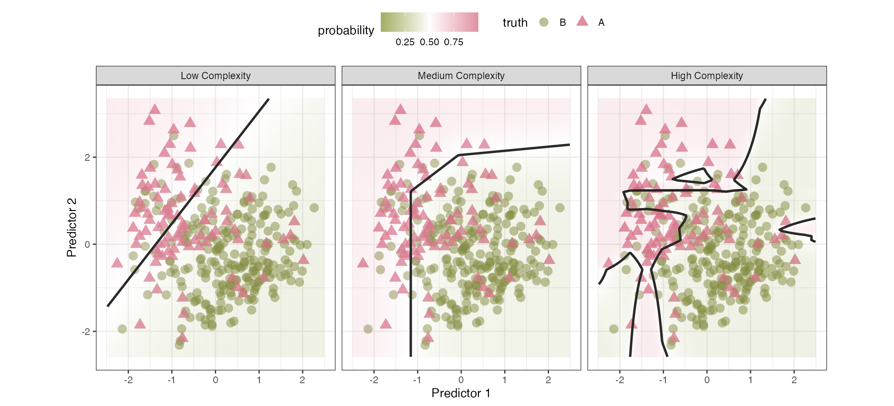
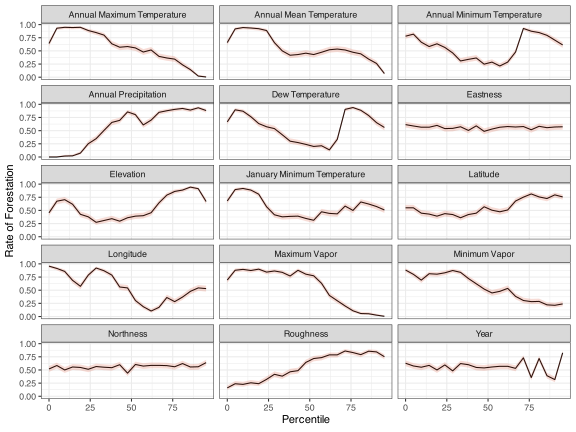
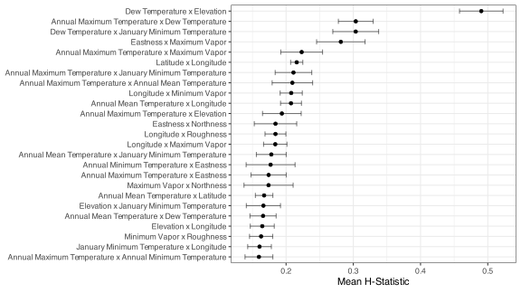
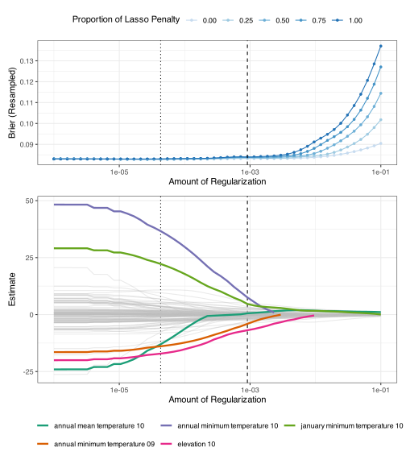
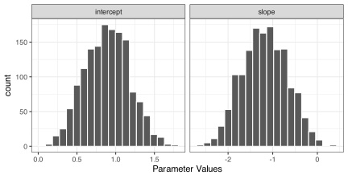

16 Generalized Linear and Additive Classifiers
We often conceptualize classification models by the type of class boundary they produce. For example, in Figure 16.1, two predictors are visualized, and the colors and shapes of the data indicated their class memberships. The class boundaries are visualized as black lines, dividing the data into two (or more) regions where the model predicted a specific class. When there are more than two predictors, visualizing this boundary becomes impossible, but we still use the idea of a line that demarcates different regions that have the same (hard) class prediction.
The low-complexity model attempts to bisect the two classes using a simple straight line. Points to the northwestern side of the line are classified as rose-colored triangles, and those on the opposite side are green circles. The background colors in the plot represent the estimated probabilities. This model underperforms since there are a high number of triangles on the wrong side of the line. The medium complexity model divides the data using a boundary that has three straight line segments. These linear segments result in a nonlinear boundary function. It also does not do a perfect job of predicting the data, but it has adapted to the data more than the simple linear boundary. The high complexity boundary uses the same underlying model as the medium complexity fit, but a tuning parameter was increased to allow the model to adapt more to the training data (perhaps a little too much). As a result, there are four distinct regions that are produced by these boundaries. Unfortunately, the model is overfits to the training set. To address this, the tuning parameter in question should be better optimized to balance complexity and overfitting.
This chapter focuses on models that, at first appearance, produce strictly linear class boundaries. Apart from feature engineering, they tend to be relatively fast to train, and are more likely to be interpretable due to their simplicity. We’ll start by discussing the most used classification model: logistic regression. This model has many important aspects to explore, as well as numerous ways to estimate model parameters. An extension of this model for more than two classes, a.k.a. multinomial regression, is also described. Finally, we review generalized additive models (GAMs) that feature spline basis functions.
However, before diving into modeling techniques, let’s take a deep look at the Washington State forestation data originally introduced in Section 3.9. These data will be used to demonstrate the nuances of different classifications from this chapter through Chapter 19.
16.1 Exploring Forestation Data
These data have been discussed in Sections 3.9, 10.8, and 13.4. As a refresher, locations in Washington state were surveyed, and specific criteria were applied to determine whether they were sufficiently forested. Using predictors on the climate, terrain, and location, we want to accurately predict the probability of forestation at other sites within the state.
As previously mentioned, the data exhibits spatial autocorrelation, where objects close to each other tend to have similar attributes. Although this book does not focus on spatial analysis; we apply ordinary machine learning tools to analyze these data, which may be, to some degree, suboptimal for the task. Fortunately, severals aspects of the study reduce the impact of spatial autocorrelation. First, Bechtold and Patterson (2015) describes the sampling methodology, in which the on-site inspection locations are sampled from within a collection of 6,000-acre hexagonal regions. Thus, the spatial autocorrelation is less severe than it might otherwise be, reducing the risk of using spatially ignorant modeling methodologies. Second, our data spending methodologies are spatially aware, which helps mitigate problems that ordinary ML models have with spatially autocorrelated data. Specifically, when splitting the data for training and evaluation, we used a buffer to add some space between the data to separate fit and assessment sets (e.g., Figures 3.5 and 10.10). This practice helps to reduce the risk of ignoring the autocorrelation when estimating model parameters.
To learn more about spatial machine learning and data analysis, Kopczewska (2022) is a nice overview. We also recommend Nikparvar and Thill (2021), Kanevski, Timonin, and Pozdnukhov (2009), and Cressie (2015).
As with any ML project, we conduct preliminary exploratory data analysis to determine whether any data characteristics might affect how we model them. Table 16.1 has statistical and visual summaries of the 15 numeric predictors using the training data. Several of the predictors exhibit pronounced skew (right or left leaning). By coercing the distributions of some predictors to be more symmetric, we might gain robustness and perhaps an incremental improvement in performance (for some models).
Also, the annual minimum temperature, dew temperature, January minimum temperature, and maximum vapor show bimodality in the distributions. The year of inspection is also interesting; the data collection was sparse before 2011, and subsequent years contain a few hundred data points per year before beginning to drop off in 2021. These characteristics are not indicative of problems with data quality, but it can be important to know that they exist when debugging why a model is underperforming or showing odd results.
| Predictor | Minimum | Mean | Max | Std. Dev | Skewness | Distribution |
|---|---|---|---|---|---|---|
| Annual Maximum Temperature | −2.98 | 13.9 | 19.0 | 2.79 | −1.00 | |
| Annual Mean Temperature | −7.89 | 8.51 | 12.5 | 2.37 | −1.12 | |
| Annual Minimum Temperature | −15.4 | −3.13 | 4.50 | 3.16 | 0.200 | |
| Annual Precipitation | 171 | 1,200 | 5,900 | 1,040 | 1.15 | |
| Dew Temperature | −14.4 | 2.26 | 8.56 | 2.89 | −0.0831 | |
| Eastness | −100 | −3.21 | 100 | 69.4 | 0.0649 | |
| Elevation | 0 | 674 | 3,820 | 484 | 0.915 | |
| January Minimum Temperature | −12.8 | 3.12 | 8.14 | 2.24 | −0.751 | |
| Latitude | 45.6 | 47.4 | 49.0 | 0.877 | 0.0592 | |
| Longitude | −125 | −120 | −117 | 2.04 | −0.0843 | |
| Maximum Vapor | 306 | 1,100 | 2,020 | 351 | 0.165 | |
| Minimum Vapor | 12.0 | 132 | 336 | 75.1 | 0.271 | |
| Northness | −100 | −2.08 | 100 | 70.0 | 0.0432 | |
| Roughness | 0 | 48.8 | 376 | 47.7 | 1.44 | |
| Year | 2,000 | 2,020 | 2,020 | 3.24 | −0.402 |
Recall that Figure 13.2 previously described the correlation structure of these predictors. There were several clusters of predictors with strong magnitudes of correlation. This implies that there is some redundancy of information in these features. However, machine learning is often “a game of inches,” where even redundant predictors can contribute incremental improvements in performance. In any case, the analyses in this chapter will be profoundly affected by this characteristic; it will be investigated in in more detail below.
Individually, how does each of these features appear to relate to the outcome? To assess this, we binned each numeric predictor into roughly 20 groups based on percentiles and used these groups (each containing about 230 locations) to compute the rate of forestation and 90% confidence intervals1. As an exploratory tool, we can use these binned versions of the data to see potential relationships with the outcome. Figure 16.2 shows the profiles. Note that there is enough data in each bin to make the confidence intervals very close to the estimated rates.

Quite a few predictors show considerable nonlinear trends, and a few are not monotonic (i.e., the sign of the slope changes over the range of values). The Eastness and Northness features, which capture the landscape orientation at the location, show flat trends. This means that these predictors are less likely to be important. However, once in a model with other predictors, the model may be able to extract some utility from them, perhaps via interaction terms. The primary takeaway from this visualization is that models that are able to express nonlinear trends will probably do better than those restricted to linear classification boundaries.
In addition to longitude and latitude, the data contains a qualitative location-based predictor: the county in Washington. There are data on 39 counties. The number of locations within each county can vary with San Juan county having the least training set samples (6) and Okanogan having the most (365). Figure 16.3 shows how the rate of forestation changes and the uncertainty in these estimates. Several counties in the training set have no forested locations. Given the number of counties and their varying frequencies of data, an effect encoding strategy might be appropriate for this predictor.
Finally, it might be a good idea to assess potential interaction effects prior to modeling. Since almost all of our features are numeric, it can be difficult to assess interactions visually, so the H-statistics for two-way interactions were calculated using a boosted tree as the base model using the numeric features. Since there are only 105 possible interactions, the H-statistics were recomputed 25 times using different random number generators so that we can compute a mean H-statistic and its associated standard error.

The vast majority of the 105 H-statistics are less than 0.215 and there are a handful of interactions that are greater than that value; we’ll take the top five interactions and use them in a logistic regression shown below.
The next section will describe a mainstay of machine learning models for two classes: logistic regression.
16.2 Logistic Regression
Logistic regression is a classification model that can be used when there are \(C = 2\) classes. Like all binary classification models, its goal is to accurately estimate the probability of an event occurring2. As discussed in the previous chapter, the probability parameter \(\pi\) must be between zero and one, and we often frame the problem via the Bernoulli distribution3 (i.e., \(y \sim Bernoulli(\pi)\)). The likelihood function4 is:
\[ \ell(\pi_i; y_{ij}) = \prod_{i=1}^{n_{tr}} \pi_i^{y_{i1}} (1-\pi_i)^{y_{i2}} \tag{16.1}\]
where \(\pi_i\) is the theoretical probability of an event for sample \(i\) (\(i = 1, \ldots, n_{tr}\)) and \(y_{ic}\) is the binary indicator for class \(c\). As written above, each row of the data has its own probability estimate. However, the likelihood function alone is ignorant of relationships with features that may be associated with the resulting probability of a sample within a particular class. Let’s now see how we can relate this likelihood to information to a set of features.
In many modeling tasks, we start with a tabular dataset of predictors and seek to understand how they jointly affect the response (\(\pi_i\), in this context) in a clear and understandable way. A familiar equation that we have used in previous chapters is a linear combination parameters of the \(p\) predictors:
\[ \boldsymbol{x}_i'\boldsymbol{\beta} = \beta_0 + \beta_1 x_{i1} + \ldots + \beta_p x_{ip} \tag{16.2}\]
This quantity is often referred to as the “linear predictor” (denoted as \(\eta_i\)), and it can take any value on the real line (i.e. from -\(\infty\) to \(\infty\)). Because probabilities must lie between 0 and 1, the linear predictor on its own cannot be used directly to model a probability. To resolve this, we apply a nonlinear transformation that constrains the outputs to [0, 1]. In logistic regression, we use the logistic model which takes the form:
\[ \pi_i = \frac{1}{1 + \exp(-\boldsymbol{x}_i'\boldsymbol{\beta})} \tag{16.3}\]
This keeps the probability values between zero and one no matter how large or small the linear predictor becomes. This nonlinear function can be derived using differential equations for growth curves. Although the model has been rediscovered several times, it was first derived in the 1800s and was not commonly known as the “logistic” model until 1925. See Cramer (2004) for a history.
There are several established techniques for estimating parameters in logistic regression; we will examine the most important ones in the subsections that follow. The most common approach is maximum likelihood estimation (MLE), where we use a numerical optimization method to identify parameter estimates to minimize the negative log-likelihood loss function:
\[ -\log \ell(\pi_i; y_{ij}) = \sum_{i=1}^{n_{tr}} \left[ y_{i1}\log(\pi_i) + (1- y_{i1}) \log(1-\pi_i)\right] \tag{16.4}\]
Working with the log-likelihood is more numerically stable than attempting to maximize the likelihood itself for finding MLEs of the \(\boldsymbol{\beta}\) parameters. McCullagh and Nelder (1989) provides a detailed description of the gradient-based estimation procedure know as iteratively reweighted least squares (IRLS). IRLS works by repeatedly fitting weighted least squares, where each observation’s weight is a function of the current estimate of its variance. This algorithm tends to converge very quickly for logistic regression5 and has theoretical guarantees.
Overall, for logistic regression, maximum likelihood estimation generates a relatively stable estimator. While it can be sensitive to outliers and high influence points (Pregibon 1981), a limited amount of data jittering or omissions will not widely affect the parameter estimates unless the training set is fairly small. We’ll see an exception below in Section 16.2.3, where specific characteristics of the training data make the estimators unstable.
From a statistical perspective, MLEs yield parameter estimates that maximize the probability of observing the given data under the logistic model. They are also unbiased estimates of the true parameters. However, they may suffer from high variance.6.
To illustrate logistic regression, let’s use the training data to model the probability of forestation as a function of the longitude. In this simple logistic model, the logit function has just the slope and intercept parameters. Using the entire training set, we solved the log-likelihood equations (based on Equation 16.4) to estimate the parameters. The optimization converges after 4 iterations, producing the linear predictor function:
\[ \boldsymbol{x}_i'\boldsymbol{\beta} = -49.276 -0.411\: longitude_i \tag{16.5}\]
Figure 16.5 shows this pattern using the longitude predictor in the forestation data in green. The data points shown are the binned data from Figure 16.2; the model is actually fit on the individual locations in the training set (i.e., the binned version of the data were not used for training).
Why does the rate swing up and down? Looking back at Figure 3.3, we see that most of the initial western portion of the state is forested. However, Seattle is adjacent to the water of Puget Sound; this accounts for the area of nonforested locations around longitudes of about -122.3°. Further east of Seattle is mostly forested. East of this lies a large swath of unforested land (especially in the mid to south east). This is reflected in the drop in the rates from about -120° to -118.5°. In the easternmost section of the state, there is a region of forested land to the north, accounting for the rate increase at the right-hand side of Figure 16.5.
#| '!! shinylive warning !!': |
#| shinylive does not work in self-contained HTML documents.
#| Please set `embed-resources: false` in your metadata.
#| label: fig-longitude
#| out-width: "80%"
#| viewerHeight: 600
#| standalone: true
library(shiny)
library(bslib)
library(ggplot2)
library(dplyr)
library(parsnip)
library(mgcv)
library(splines2)
library(scales)
light_bg <- "#fcfefe" # from aml4td.scss
grid_theme <- bs_theme(
bg = light_bg,
fg = "#595959"
)
theme_light_bl <- function(...) {
ret <- ggplot2::theme_bw(...)
col_rect <- ggplot2::element_rect(fill = light_bg, colour = light_bg)
ret$panel.background <- col_rect
ret$plot.background <- col_rect
ret$legend.background <- col_rect
ret$legend.key <- col_rect
ret$legend.position <- "top"
ret
}
# ------------------------------------------------------------------------------
ui <- page_fillable(
theme = bs_theme(bg = "#fcfefe", fg = "#595959"),
padding = "1rem",
layout_columns(
fill = FALSE,
col_widths = breakpoints(sm = c(-1, 5, 5, -1)),
column(
width = 4,
checkboxGroupInput(
inputId = "include",
label = "Include",
choices = list(
"Binned Data" = "Data",
"Untransformed" = "fit_linear",
"Splines" = "fit_spline",
GAM = "fit_gam"
),
selected = c("fit_linear", "Data"),
inline = TRUE
)
),
column(
width = 4,
radioButtons(
inputId = "yaxis",
label = "y-axis",
choices = c("Event Rate" = "rate", "Logit" = "logit"),
inline = TRUE
)
)
),
as_fill_carrier(plotOutput("plot"))
)
server <- function(input, output) {
load(url(
"https://raw.githubusercontent.com/aml4td/website/main/RData/forested_data.RData"
))
lng_bin <-
forested_train |>
dplyr::select(class, longitude) |>
mutate(lng_bin = ntile(longitude, 21)) |>
dplyr::summarize(
rate = mean(class == "Yes"),
lng = median(longitude),
n = length(longitude),
.by = c(lng_bin)
) |>
mutate(logit = binomial()$linkfun(rate))
lng_rng <- extendrange(lng_bin$lng)
# lng_rng[1] <- 0.0
lng_grid <- tibble(longitude = seq(lng_rng[1], lng_rng[2], length.out = 100))
linear_fit <-
logistic_reg() |>
fit(class ~ longitude, data = forested_train)
linear_pred <-
augment(linear_fit, new_data = lng_grid) |>
mutate(Model = "Linear Term", group = "fit_linear")
num_spline <- 10
spline_fit <-
logistic_reg() |>
fit(
class ~ naturalSpline(longitude, df = num_spline),
data = forested_train
)
spline_lab <- paste0("Natural Splines (", num_spline, " df)")
spline_pred <-
augment(spline_fit, new_data = lng_grid) |>
mutate(Model = spline_lab, group = "fit_spline")
gam_fit <-
gen_additive_mod() |>
set_mode("classification") |>
fit(class ~ s(longitude), data = forested_train)
gam_lab <- paste0("GAM (", round(sum(gam_fit$fit$edf[-1]), 1), " df)")
gam_pred <-
augment(gam_fit, new_data = lng_grid) |>
mutate(Model = gam_lab, group = "fit_gam")
predictions <-
bind_rows(linear_pred, spline_pred, gam_pred) |>
mutate(
Model = factor(Model, levels = c("Linear Term", spline_lab, gam_lab))
) |>
mutate(logit = binomial()$linkfun(.pred_Yes))
output$plot <-
renderPlot(
{
if (input$yaxis == "rate") {
p <-
lng_bin |>
ggplot(aes(lng)) +
labs(x = "Longitude", y = "Probability of Forestation") +
lims(y = 0:1)
} else {
p <-
lng_bin |>
ggplot(aes(lng)) +
labs(x = "Longitude", y = "Logit")
}
if (any(input$include == "Data")) {
if (input$yaxis == "rate") {
p <- p + geom_point(aes(y = rate), alpha = 1 / 3, cex = 3)
} else {
p <- p + geom_point(aes(y = logit), alpha = 1 / 3, cex = 3)
}
}
if (any(grepl("fit_", input$include))) {
curve_data <- dplyr::filter(predictions, group %in% input$include)
if (input$yaxis == "rate") {
p <- p +
geom_line(
data = curve_data,
aes(x = longitude, y = .pred_Yes, color = Model),
linewidth = 1
)
} else {
p <- p +
geom_line(
data = curve_data,
aes(x = longitude, y = logit, color = Model),
linewidth = 1
)
}
p <- p +
theme(legend.position = "top") +
scale_color_brewer(drop = FALSE, palette = "Dark2")
}
p <- p + theme_light_bl()
print(p)
},
res = 100
)
}
app <- shinyApp(ui = ui, server = server)
appThe model fit initially underestimates the rate of forestation for the most western locations, and the predicted probability slowly decreases in a fairly flat sigmoid. Given the ups and downs of the observed event rates over longitude, this model fit misses almost all of the nuance in the data. The data trend is not monotonically decreasing, so our simple linear predictor is doing its best but is not flexible enough to emulate what is actually occurring.
Generalized Linear Models
Logistic regression is a special case of the class of generalized linear models (GLMs) (McCullagh and Nelder 1989). GLMs allow us to model different types of responses, such as real-valued continuous data, counts, or binary outcomes, by relating a transformation of the expected value of the response to a linear predictor. In the case of logistic regression, the response is binary and we use the logit link function (the inverse of Equation 16.3) to connect the probability of \(\pi_i\) to the linear predictor:
\[ log\left(\frac{\pi_i}{1 - \pi_i}\right) = \eta_i = \boldsymbol{x}_i'\boldsymbol{\beta} \tag{16.6}\]
Here, \(\boldsymbol{x}_i'\boldsymbol{\beta}\) is the linear predictor and \(log\left(\frac{\pi_i}{1 - \pi_i}\right)\) is the link function. The link function must be chosen so that the transformed expected values can lie anywhere on the real line, even though \(\pi_i\) is constrained to the interval [0, 1]. Logistic regression specifically uses the logit link, but several other link functions are often used in binary regression, such as the probit and complementary log-log links, providing alternative ways to map \(\pi_i\) into the linear predictor space. See Morgan (1992) for more specialized “link functions.” From a broader view, we might refer to our model as “binary regression.”
Looking back to Figure 16.5, we can change the y-axis data and show how the logit changes for our fitted model. The line visualizes the estimated linear predictor for these data. Sadly, when the representation of our data is similarly changed, the data pattern is not linear; our linear model isn’t effectively emulating the nonlinear pattern in the data.
Embedding logistic regression within the GLM framework offers important advantages. First, it insures certain theoretical properties, such as the concavity of the log-likelihood, which means that we can rely on well-established gradient-based optimization methods to find the maximum likelihood estimates. Second, the GLM framework gives us tools for inference where we can assess the importance of each predictor through hypothesis testing and confidence intervals around the parameter estimates.
It’s easy to take these benefits for granted. Suppose we were to find parameter estimates using some other objective function, such as the Brier score or the area under the ROC curve. In that case, it might be difficult to solve the required equations, let alone derive the methods to make inferences regarding parameters.
Before moving on, it’s important to clarify what “linear predictor” means in the context of GLMs. The term “linear” refers to the linearity in the parameters \(\boldsymbol{\beta}\), not linearity in the relationships between inputs and outcomes. In other words, class boundaries (or decision boundaries) can be nonlinear so long as the model remains a linear combination of model terms. These terms, \(x_{ij}\) can represent any function of one or more parameters. We can achieve this nonlinearity through feature engineering as discussed in Chapters 5 through 8 to create a better model.
For example, in Figure 16.5, we saw that using the longitude values as our single predictor \(x\) didn’t work well. When plotted on the logit scale, there is a clear nonlinear function in the binned rates. To model this more flexibly, we incorporate spline-based features. Specifically, Figure 16.5 displays the results when ten natural spline features are used in the model. Visually, we can see that this expansion improves the model’s accuracy at predicting the outcome.
Logistic regression models can be drastically improved by including better representations of our predictors. Since it is an interpretable and stable model, we might be motivated to spend more time developing this model via exploratory data analysis and feature engineering. In many teaching materials and websites, we see analyses that quickly label the results of a logistic model as ineffective (due to the use of simple model terms) before moving on to more black-box machine-learning methods. The virtue of learning about your data and how the predictors related to the outcome can not only improve the logistic model but enable a more complete understanding and description of why it works.
Forestation Model Development
We can assess each of these feature engineering steps by fitting logistic regression pipelines that sequentially add preprocessing operations. Our five models are:
- Simple model: Convert each of the 39 counties to binary indicators and drop any predictors with zero-variance.
- Normalization model: Begin with the simple model and add a normalization step that applies the ORD transformation to all numeric predictors.
- Encoding model: Build on the normalization model by replacing the county dummy indicators with effect encoding.
- Interaction model: extend the encoding by including interaction terms.
- Spline model: Enhance the interaction model further with ten natural spline basis functions for a set of predictors.
For each of the five preprocessing/model configurations, we’ll resample the training set and estimate several performance metrics (but will focus on the Brier score).
Figure 16.6 displays the results from resampling each of our five logistic regression models. Most preprocessing steps yield incremental reductions in the Brier score. The most substantial improvement comes from replacing many county-level indicator variables with effect encoding. Normalization also appears to reduce the Brier score, although its error bars overlap with those of previous models—suggesting that this benefit may not be statistically significant. Overall, the best pipeline achieves approximately one-third lower Brier score compared to the simple model by improving how we represent the predictors.7.

Along with the Brier score values of 0.0836, the spline pipeline (i.e., Model #5) had the following resampling estimates: ROC AUC = 0.943, a PR AUC = 0.941, and a cross-entropy = 0.293. During resampling, there were 10 resamples, leading to 10 ROC curves and corresponding performance metrics. By pooling predictions from all 10 assessment sets, we constructed approximate ROC and calibration curves (Figure 16.7). The calibration curve indicates that the model reliably predicts samples with accuracy The ROC curve shows good class separation, although it’s shape is otherwise unremarkable.

From here, we should investigate which predictors had the greatest influence on the model. For example, were the 10 interactions that we included statistically significant and practically important? Did we include too many or too few of them? We can also visualize the predicted probabilities across geographic locations to identify areas where calibration is poor. Additionally we might improve the model by applying a supervised feature selection method to filter out less useful predictors.
16.2.1 Examining the Model
There are many ways to evaluate a model’s performance. One common, but often misplaced, focus is on the statistical significance (p-values) of individual model terms. If the model’s primary goal is interpretation, this may make sense. However, for ML applications, p-values are usually not very informative, because they often do not correlate with how well the model will make predictions. This is especially true in our logistic regression model, which includes many spline basis functions: knowing that the fourth spline term has a small p-value tells us little about overall predictive power. That said, we will revisit inference later as a diagnostic tool.
Instead, for assessing model quality, we recommend using the held-out predictions to conduct residual analysis, looking for systematic deviations in prediction errors. The most basic residual is the simple difference between the “observed” outcome and the predicted probability: \(e_{ic} = y_{ic} - \widehat{p}_{ic}\). However, these residuals have heteroscedastic variance–the variance of the \(\widehat{p}_{ic}\) changes over their [0,1] range. A residual of 0.1 has a different context when \(\widehat{p}_i = 0.01\) compared to \(\widehat{p}_i = 0.5\). To normalize these values, we can use Pearson residuals, which are \(e_{ic}\) divided by the standard deviation:
\[ e^p_{ic} = \frac{y_{ic} - \widehat{p}_{ic}}{\widehat{p}_{ic} (1 - \widehat{p}_{ic})}. \]
Alternatively, we can look at deviance residuals. The deviance is a likelihood-based comparison between two models: our current model and one that is saturated where the model perfectly fits the training data. For logistic regression, these take the form:
\[ e^d_{ic} = \text{sign}(e_{ic}) \left[-2(y _{ic}\, \text{log}(\widehat{p} _{ic}) + (1 - y _{ic})\, \text{log}(1 - \widehat{p}_{ic}))\right]^{1/2} \]
See Pregibon (1981) and Agresti (2015) for discussions.
In practice, we should plot residuals against each predictor’s values to check for systematic patterns. If the residuals show non-random structure (e.g. curved or clustered patterns), it suggests that the predictor may not be represented properly in the model. For example, in Figure 16.8 we plot deviance residuals versus longitude in the top panel, using predictions from each resampling fold on the held-out data.
The top left-hand panel shows residuals from the model that uses only simple linear predictor terms. For each class, we can see large spikes in residuals at specific longitude ranges–these spikes correspond to to the previous ups and downs shown in Figure 16.5. It is interesting that this visualization shows different patterns for each class; they are not mirrored reflections of one another. For example, for the region between longitudes of approximately -120.5° and -118°, the residuals for unforested locations are very small, while the forested locations exhibit a spike.
In contrast, the right-hand panel has many more residuals near zero and significantly attenuated spikes/patterns. This is indicative of an improvement of model fit. However, some samples in the spline model have absolute residuals larger than the simpler model. Overall, though, the spline model exhibits fewer systematic deviations.

Given the spatial structure of our data, mapping residuals geographically is also useful. the bottom panel of Figure 16.8 shows an interactive map of the the largest residuals for the model containing spline terms. We can see locations with the absence of large residuals and specific areas where \(e^d_{ic}\) tend to be large such as the border with Canada and south of the Strait of Juan de Fuca.
Let’s move on to consider how the logistic model can facilitate interpretation.
16.2.2 Interpreting the Logistic Model
The logit function has a meaningful interpretation since it contains the odds of an event occurring. Let’s consider a simple case where we are modeling the change by county. If we use Yakima county as the reference cell (recall Section 6.2), the intercept of a logistic model is -0.423. This corresponds to a probability of 39.6%. The odds of some event that occurs with probability \(\pi\) is
\[ odds = \pi / (1-\pi) \]
or “one in \(1/\pi\).” For Yakima, this relates to the logistic regression model since
\[ log\left(\frac{Pr[\text{Yakima forested}]}{Pr[\text{Yakima unforested}]}\right) = log\left(\text{Yakima odds}\right) = \beta_0 \]
Therefore, the odds of a tree being forested in this county are exp(-0.423) = 0.655 or, one in about 2.5 locations.
Alternatively, consider Skamania County, which contains Gifford Pinchot National Forest. It’s model coefficient is 3.44 However, recall that with a reference cell encoding, this is the change in the logit relative to the reference value (Yakima County). If we are interested in the probability of forestation for Skamania, we have to look at the sum of both coefficients (3.02 logit units) which means that the probability of forestation estimated to be about 95.3%.
One way of assessing how much more likely an event is to occur is the odds ratio. For example, if we wanted to compute the odds ratio of forestation between Yakima and Skamania counties, we can use different sets of coefficients from the linear predictor. Since the forestation rate is higher in Skamania than Yakima, the odds ratio of interest is
\[ \frac{\text{Skamania odds}}{\text{Yakima odds}} \]
We know that
\[ log\left(\text{Skamania odds}\right) = log\left(\frac{Pr[\text{Skamania forested}]}{Pr[\text{Skamania unforested}]}\right) = \beta_0 +\beta_1 \]
so that
\[ \frac{\text{Skamania odds}}{\text{Yakima odds}} = \frac{exp(\beta_0 +\beta_1)}{exp(\beta_0)} = exp(\beta_0 + \beta_1 - \beta_0) = exp(\beta_1) \]
From our estimated coefficient, the odds of being forested in Skamania is 31.1 times larger than in Yakima. For each categorical predictor, we can use its model coefficient to compute odds ratios relative to the reference cell8. Since we are using maximum likelihood estimation, we can also compute confidence intervals for this odds ratio; the 90% interval is (15.3, 74.5), the lower bound being very far from a equivocal value of 1.0.
For numeric predictors, such as eastness or elevation, exponentiating the coefficient gives us a per unit odds ratio. Since the predictors might be in different units, the interpretation can be more complex depending on the situation9.
In either case, the logistic regression model does have a structure that lends itself to natural probabilistic interpretation. See Hosmer, Lemeshow, and Sturdivant (2013) for a broader discussion.
In addition to fitting models, there are methods to explain how a model or a specific prediction, works, regardless of the model type. These tools are part of the field of explainable machine learning. Some, like the H-statistic for detecting interactions (see Section 8.1.2) help quantify effects of predictors. These will be discussed in detail in ?sec-explanations, but here is a preview.
We already saw that longitude exhibits a complex, nonlinear relationship with forestation classification when considered alone. When other predictors are included in the model, though, it becomes important to understand how longitude contributes to predictions in that broader context. How does longitude affect model predictions when placed in a model with other predictors?
Partial dependence plots (PDP) are visualization tools designed for this task. Here is how they work: suppose we were to sample a single location \(x_i\) from the training set (or any other set of data). Hold all predictors except longitude constant, and vary longitude over a grid of values. For each grid value, compute the model’s predicted probability. That gives one profile curve showing how the prediction changes as longitude changes. Since this profile depends on the particular point’s other predictor values, different data points generate different profiles. To summarize the effect of longitude overall, sample many data points, compute all their profiles, and average them. The result is a PDP, which shows the average effect of longitude across its observed range, accounting for the rest of the model.
Figure 16.9 shows a PDP for longitude from our most complex model (including interactions and splines). The 1,000 grey lines show the individual profiles, and the red curve shows the average effect of this predictor, in the presence of the other model terms.

The pattern is different from Figure 16.5. For example, there is no decreasing trend in the eastern part of the state; probabilities for locations greater than longitudes of -121° are fairly constant. The difference is due to some other predictor having additional influence on locations in that area of the state (perhaps the county).
This model appears to be adequate, but it is not. There is a major issue related to our parameter estimates that, while not obviously affecting the predictive ability, reflects a flaw that could make the fit unreliable.
16.2.3 A Potential Problem: Multicollinearity
Examining which model terms demonstrate statistical significance offers a valuable framework for assessing their relative importance within the model. Basic logistic regression via MLE provides a foundation for standard hypothesis tests. Table 16.2 shows the five most statistically significant terms (excluding the intercept) based on their p-values. Notably, the county effect encoding appears among the top predictors, which should be unsurprising since it captures the shrunken mean logit for each county. The remaining significant terms all correspond to spline basis expansion terms. Using an \(\alpha\) value that corresponds to a 10% false positive rate, 41 terms out of 130 achieve statistical “significance”. When interpreting these results, it is important to note that the original predictors were normalized to approximate a standard normal distribution, meaning that most of the predictor values should be between \(\pm 3\), prior to making spline and/or interaction terms.
| Model Term | Estimate | Std. Err. | t-statistic | p-value |
|---|---|---|---|---|
| Smallest p-values | ||||
| county | −0.706 | 0.0782 | −9.02 | < 2e-16 |
| roughness (spline #6) | −2.91 | 0.628 | −4.63 | 3.6e-06 |
| roughness (spline #8) | −2.72 | 0.590 | −4.60 | 4.1e-06 |
| roughness (spline #7) | −2.53 | 0.623 | −4.06 | 5.0e-05 |
| latitude (spline #1) | −15.0 | 3.93 | −3.82 | 0.00014 |
| Largest Standard Errors | ||||
| annual preciptation (spline #10) | −423 | 422 | −1.00 | 0.31646 |
| annual preciptation (spline #1) | −217 | 213 | −1.02 | 0.30728 |
| annual preciptation (spline #3) | −146 | 141 | −1.03 | 0.30165 |
| annual preciptation (spline #5) | −148 | 141 | −1.05 | 0.29425 |
| annual preciptation (spline #7) | −148 | 141 | −1.05 | 0.29405 |
For further insight, it is instructive to examine which predictors show no evidence of being different from zero. The bottom of the table shows five terms with large p-values, all of which are spline terms derived from annual precipitation. However, notice that the estimated coefficients and their standard error terms are of magnitude in the hundreds. Given that the predictor values for these spline terms range between zero and 0.617 (on average), it is difficult to imagine that the coefficients and their values are reasonable.
The reason for these excessively large becomes apparent when examining Figure 13.2, which revealed several predictors that had large (absolute) correlations with one another. High correlation between multiple predictors, known as multicollinearity10, is a well-known challenge in regression analysis and occurs frequently in many data sets. As illustrated in the correlation matrix heatmap (Figure 13.2), numerous climate-related predictors exhibit strong correlations with one another. This issue intensifies after creating spline and interaction terms: there are 62 pairwise correlations between model terms that have correlations greater than 0.75 and 23 term pairs with correlations greater than 0.90.
While this model’s predictive performance is good, the model coefficients are extremely unstable. Multicollinearity not only inflates the variance of the parameter estimates but can also reverse the coefficient’s sign, leading to an incorrect interpretation (see below).
The variance inflation factor (VIF) quantifies the extent to which the variance of a coefficient estimate is inflated due to correlations among predictors (Belsley, Kuh, and Welsch 2013). Specifically, VIF measures the ratio of the variance for a set of potentially correlated predictors relative to a set of completely uncorrelated predictors. For linear regression, the VIF is calculated as:
\[ \text{VIF}_j = \frac{1}{1 - R_j^2} \]
where \(R_j^2\) represents the coefficient of determination from a linear regression in which predictor \(X_j\) serves as the response variable and the remaining \(j-1\) predictors function as explanatory variables. While originally developed for linear regression contexts, Weissfeld and Sereika (1991) extended this diagnostic framework to generalized linear models. A general rule of thumb suggest that VIF values exceeding 5.0 or 10.0 indicate substantial multicollinearity, reflecting overlapping information among predictors. For our model, the median VIF across the parameters was 294 with the largest being 371,153, which corresponds to an annual precipitation spline term.
Table 16.3 demonstrates the multicollinearity problem using a simplified model with two untransformed predictors: elevation and mean temperature. The correlation between these two predictors is -0.94, indicating substantial collinearity. The first two rows present single-predictor models, while the third row displays the results when both predictors are included simultaneously. The parameter estimates undergo dramatic changes in the combined model: the elevation coefficient reverses sign, and the mean temperature coefficient increases by several orders of magnitude. Notably, the variance inflation factor reaches sufficiently high levels to flag this multicollinearity issue.
| Model |
Intercept
|
Elevation
|
Annual Mean Temperature
|
||||||
|---|---|---|---|---|---|---|---|---|---|
| Estimate | Std. Error | VIF | Estimate | Std. Error | VIF | Estimate | Std. Error | VIF | |
| elevation only | 0.445 | 0.0519 | — | −0.00106 | 0.0000678 | — | — | — | — |
| mean temperature only | −3.49 | 0.151 | — | — | — | — | 0.371 | 0.0165 | — |
| both | −14.3 | 0.572 | — | 0.00449 | 0.000223 | 7.91 | 1.28 | 0.0498 | 7.91 |
What can we do about this problem? Several strategies exist for mitigating multicollinearity. First, transforming the original predictors using principal component analysis (PCA) or partial least squares (PLS) can substantially reduce correlations among predictors. However, this approach complicates the incorporation of interaction terms and nonlinear relationships, as each derived predictor represents a composite of all original variables. Second, a correlation filter can be employed to remove the minimal set of predictors necessary to reduce multicollinearity’s overall impact. While this represents a practical approach, it carries a risk of predictive performance degradation. Given that machine learning performance improvements often derive from incremental gains, the removal of nearly redundant predictors may diminish predictive ability.
For logistic regression specifically, the most effective solution is to retain the original predictor set while employing regularization—an alternative parameter estimation technique that naturally addresses multicollinearity.
16.2.4 Regularization Through Penalization
Regularization is a technique that coerces a potentially complex solution into one that is less extreme. We’ve already seen regularization a few times:
- Early stopping when fitting neural networks (Section 2.4, footnote) prevented model training to become worse.
- Effect encodings (Section 6.4.3) moved naive statistical estimates toward more moderate values.
- Bayes’ Rule for estimating a proportion (Section 12.5.1) shrank the naive probability estimate towards the prior.
- Tree complexity tuning parameters (e.g. \(n_{min}\), see Section 9.3) restrict tree depth by preventing splits on small subsets.
This section examines regularization techniques commonly applied to regression models, primarily through the penalization of model coefficients. The next section introduces Bayesian estimation as a framework that naturally produces regularization effects.
Why would we regularize a logistic regression model? There are several reasons. First, regularization prevents coefficient estimates from exploding to magnitudes larger than appropriate. As demonstrated in the preceding section, highly correlated predictors can produce abnormally large coefficients—potentially with incorrect signs—and inflated standard errors. Second, regularization enables feature selection: when a predictor has no relationship with the outcome, any non-zero coefficient should be reduced toward zero.
In logistic regression, parameter estimation proceeds through maximization of the Bernoulli log-likelihood function (Equation 16.1). The most common approach is to incorporating a penalty term to the log-likelihood (denoted as \(\mathcal{P}(\boldsymbol{\beta})\)) that discourages large parameter values. This penalty function may also include tuning parameters.
All of the techniques discussed in this section make the implicit assumption that the model features have been standardized to be in the same units (including indicator features).
Ridge regression represents one of the earliest penalization methods developed for regression models (A. Hoerl and Kennard 1970a, 1970b; R. Hoerl 2020). The ridge penalty function reduces the log-likelihood by subtracting the sum of squared regression coefficients11:
\[ \mathcal{P}_{rr}(\boldsymbol{\beta};\lambda) = \lambda\sum_{j=1}^{p} \beta_j^2 \tag{16.7}\]
The summation index starts at one, reflecting the convention that \(\beta_0\) denotes the intercept parameter. Intercept terms are universally excluded from regularization penalties for several compelling reasons. First, the intercept lacks any meaningful null value toward which shrinkage would be appropriate. A value of \(\beta_0 = 0\) corresponds to a probability estimate of 0.5, which may differ substantially from the true population intercept determined by outcome prevalence. Forcing shrinkage toward this value risks substantial model degradation by directing the intercept toward a value that is inconsistent with the overall event rate. Second, for the summation in Equation Equation 16.7 to function appropriately, predictors need to be in the same units. When data are standardized to common mean and variance, the intercept’s mean and variance become fixed at one and zero, respectively. Including the intercept in this summation would be like comparing apples to horses; it doesn’t make sense and lacks statistical justification. Third, the intercept may naturally have a large magnitude when outcome prevalence is extremely low or high. Squaring such a large value and incorporating it into the penalty sum causes the penalty to be dominated by this single term, thereby overwhelming the regularization effect on the slope coefficients—the parameters of primary inferential and predictive interest.
For a generalized linear model and a fixed value of the \(\lambda\) penalty, we estimate parameters that maximize the penalized log-likelihood:
\[ \underset{\boldsymbol{\beta}}{\text{minimize}}: -\log \ell(x| \boldsymbol{\beta}) + \mathcal{P}(\boldsymbol{\beta};\lambda) \]
Ridge regression is particularly effective when the feature matrix is ill-conditioned—that is, when we cannot compute the inverse of critical matrices (notably \(X'X\)). This condition typically arises in two scenarios: when the number of features exceeds the number of training set points, or when severe multicollinearity exists among predictors. The ridge penalty has the effect of shrinking the model coefficients, driving them toward zero at varying rates across predictors. This shrinkage prevents parameter estimates from becoming too large due to multicollinearity, stabilizes the standard errors of estimates, and can mitigate coefficient sign instability, as signs may fluctuate with penalty magnitude changes.
The amount of regularization is a tuning parameter, with effective values typically falling between zero and 0.1 (although larger values may be appropriate in certain contexts). When the penalty becomes excessively large, all coefficients shrink toward zero and the model effectively reduces to an intercept-only specification, yielding constant predictions across all observations. The penalty parameter is commonly evaluated on a \(\log_{10}\) scale to facilitate tuning across orders of magnitude.
Figure 16.10 illustrates the behavior of parameter estimates for the forestry model containing elevation and mean annual precipitation. To ensure comparability, the orderNorm transformation was applied to both predictors prior to model fitting. This standardization procedure eliminates precipitation skewness and places both predictors have the same units. The dashed horizontal lines represent parameter estimates obtained through ordinary maximum likelihood estimation without regularization. As the ridge penalty increases, each estimate smoothly decreases toward zero. At very large penalty levels, the elevation coefficient reverses sign to negative values before approaching zero.
#| '!! shinylive warning !!': |
#| shinylive does not work in self-contained HTML documents.
#| Please set `embed-resources: false` in your metadata.
#| label: shiny-two-feature-penalty
#| viewerHeight: 550
#| standalone: true
library(shiny)
library(bslib)
library(dplyr)
library(ggplot2)
library(scales)
source("https://raw.githubusercontent.com/aml4td/website/main/R/shiny-setup.R")
source("https://raw.githubusercontent.com/aml4td/website/main/R/shiny-penalty.R")
appWe choose the amount of regularization just like any other parameter: using a performance metric to decide an appropriate value. As we’ll see in subsequent analyses, the penalty-response curve typically exhibits a plateau region where model performance remains relatively stable across a broad range of penalty values. This characteristic makes it virtually impossible to select a penalty magnitude that induces overfitting. Suboptimal tuning parameter choices instead manifest as over-regularization, wherein coefficients shrink excessively toward zero (i.e. underfitting).
As previously mentioned, standard maximum likelihood estimation yields unbiased estimates; the estimates \(\hat{\beta}\) have expected values that equal the true, unknown parameters \(\beta\). We can conceptualize this as “MLE is aiming for the right target.” In contrast, the penalization methods discussed herein introduce bias into the estimates, with the magnitude of bias increasing monotonically with penalty strength. The advantage of ridge regression lies in its substantial reduction of parameter estimate variance as bias increases incrementally. This phenomenon exemplifies the fundamental bias-variance tradeoff: when the variance reduction outweighs the increase in squared bias, the mean squared error improves. However, when the predictor set lacks substantial multicollinearity, introducing bias provides no benefit, as variance reduction opportunities are minimal and the effects on estimation accuracy are adverse.
Alternatively, we can also penalize the regression using sum of the absolute value of the parameters:
\[ \mathcal{P}_{lasso}(\boldsymbol{\beta};\lambda) = \lambda\sum_{j=1}^{p} |\beta_j| \tag{16.8}\]
There are various methods that can be used to optimize this version of the penalized log-likelihood (Breiman 1995; Efron et al. 2004), but the Lasso framework introduced by Tibshirani (1996) has emerged as the predominant approach12. The Lasso penalty has an interesting theoretical property: at sufficient penalty magnitudes, individual parameter estimates can take a value of exactly zero, meaning that they are functionally eliminated from the model. This characteristic makes the Lasso one of the most effective tools for automated feature selection. However, there are numerical issues that require careful attention. Standard gradient-based optimization algorithms cannot produce exact zero values due to numerical limitations, instead yielding parameter estimates arbitrarily close to zero without reaching exactly aero. Consequently, specialized optimization tools are required to achieve genuine feature elimination.
There are a few ways that Lasso penalization regularizes the parameter estimates that are different than ridge regression. First, while ridge penalization simultaneously moves groups of correlated features towards zero, the Lasso will often choose a single feature out of a group of correlated features. Friedman, Hastie, and Tibshirani (2010) summarized this nicely:
“Ridge regression is known to shrink the coefficients of correlated predictors towards each other, allowing them to borrow strength from each other. In the extreme case of \(k\) identical predictors, they each get identical coefficients with \(1/k^{th}\) the size that any single one would get if fit alone.[…]
Lasso, on the other hand, is somewhat indifferent to very correlated predictors, and will tend to pick one and ignore the rest.”
Another phenomenon occurs when one or more features are set to zero: the rate of shrinkage to zero can change from the remaining parameters, and, in some rare cases, a parameter may become non-zero again.
Figure 16.10 illustrates the behavior of parameter estimates under varying Lasso penalty magnitudes for the two-feature model. Specifically, the elevation coefficient reaches zero and is eliminated from the model before the precipitation coefficient reaches zero. Once elevation has been removed, the remaining coefficient exhibits a slower rate of shrinkage toward zero compared to its trajectory when both predictors were present in the model.
As the comments above indicate, the Lasso model is more strongly associated with feature selection than mitigating the effects of multicollinearity (where the ridge penalty is favored). Why not use a combination to accomplish both goals? Zou and Hastie (2005) describe the elastic net model that includes a separate penalty for both criteria:
\[ \mathcal{P}_{en}(\boldsymbol{\beta};\lambda_1 \lambda_2) = \lambda_1\sum_{j=1}^{p} \beta_j^2 + \lambda_2\sum_{j=1}^{p} |\beta_j| \tag{16.9}\]
Alternatively, Friedman, Hastie, and Tibshirani (2010) described what is referred to as the glmnet penalty that uses the form:
\[ \mathcal{P}_{gn}(\boldsymbol{\beta};\lambda, \alpha) = \lambda \left[\frac{1}{2}(1 - \alpha) \sum_{j=1}^{p} \beta_j^2 + \alpha \sum_{j=1}^{p} |\beta_j| \right] \tag{16.10}\]
where \(\lambda\) is the total amount of regularization and \(\alpha\) controls the mixture of the two methods so that \(\alpha = 1\) is a Lasso model and \(\alpha = 0\) is ridge regression. The glmnet penalty formulation tends to be favored by users.
The combination strategy can help the model move between the goals of dealing with multicollinearity (and similar issues) and feature selection. By tuning the penalty and the mixing parameters, we can let the data decide which penalty it needs most (and how much). As we’ll see below, a typical pattern is a fairly flat plain where there isn’t much change in our preferred metric for a wide range of penalty values. Also, the relationship between the penalty and performance can be similar for different mixtures but shows a lagging pattern over values of \(\alpha\). As such, we can achieve virtually the same performance but with different numbers of non-zero coefficients.
The lagging trend might be related to the half contribution of the ridge penalty in Equation 16.10. If we consider a pure ridge model (\(\alpha = 0\)) versus a pure lasso model (\(\alpha = 1\)), the total amount of regularization for the former is half of the latter (for a fixed \(\lambda\)). This will be offset by the magnitudes of the summations; a summation of squared parameters will be larger than the sum of absolute parameter estimates. However, we have observed that pure ridge solutions can require larger \(\lambda\) values than pure lasso models to have the same effect on performance metrics.
When choosing the best parameters for glmnet, we might want to factor in the number of “active features” along with performance. For example, we could use desirability functions to blend the two outcomes or create a more direct rule, such as “choose \(\lambda\) and \(\alpha\) with the fewest number of predictors as long as the area under the ROC curve is greater than 0.85.”
Figure 16.10 shows the glmnet results for the two-feature model. Starting with \(\alpha = 1.0\), we have the same solution as the Lasso results. Using the slider to decrease the proportion of Lasso in the penalty slowly shifts the curves to the right, where more penalization is needed to eliminate both parameters (since more ridge regression is used). Also, as \(\alpha\) moves closer to the minimum of 10%, there becomes less difference in the slopes for the mean annual temperature before and after elevation is removed. In any case, elevation is removed before mean annual temperature for each setting.
The nature of penalized models, such as Lasso and glmnet, makes them likely to be able to exploit submodels (Section 11.3.1) for very efficient model tuning. For a specific mixture percentage, we can fit one glmnet model and evaluate a large number of penalty values almost for free13. This is only the case when the tuning grid has many \(\lambda\) values for each \(\alpha\). Space-filling designs and iterative search would not be good choices here; regular grids for these model parameters can be more computationally efficient.
The glmnet framework represents the most widely adopted approach to model regularization, yet it exhibits limitations when one or more parameter estimates are excessively large. Under Lasso or ridge penalization, a parameter estimate outlier can exert linear or quadratic influence on the penalty term, respectively. This disproportionate effect can draw other estimates toward the outlier, thereby granting it undue influence on the penalization. Fan and Li (2001) and Zhang (2010) introduced alternative approaches—the smoothly clipped absolute deviation (SCAD) and minimax concave penalty (MCP) models, respectively—which address this vulnerability through their respective penalty functions:
\[ \mathcal{P}_{scad}(\boldsymbol{\beta};\lambda, \gamma) = \begin{cases} \sum_{j=1}^{p}\lambda|\beta_j| & |\beta_j| \le \lambda \\ \sum_{j=1}^{p} \lambda|\beta_j| \frac{2\gamma\lambda|\beta_j|-\beta_j^2-\lambda^2}{2(\gamma - 1)} & \lambda < |\beta_j| \le \gamma\lambda \\ \frac{\lambda^2(\gamma + 1)}{2} & |\beta_j| \ge \gamma\lambda \end{cases} \tag{16.11}\]
and
\[ \mathcal{P}_{mcp}(\boldsymbol{\beta};\lambda, \gamma) = \begin{cases} \sum_{j=1}^{p}\frac{\lambda|\beta_j| - \beta_j^2}{2\gamma} & |\beta_j| \le \gamma\lambda \\ \sum_{j=1}^{p}\frac{\lambda^2\gamma}{2} & |\beta_j| > \gamma\lambda \end{cases} \tag{16.12}\]
Both SCAD and MCP incorporate an additional tuning parameter \(\gamma\) that provides a “clipping” effect. When coefficient magnitudes become sufficiently large (i.e., exceeding the threshold \(\lambda\gamma\)), the penalty function becomes constant. This mechanism constrains the influence that abnormally large parameters have on the regularization procedure. Consequently, these methods offer particular advantages in scenarios where the ratio of features to training samples is exceeding large, as they prevent individual outlier parameters from dominating the penalization process.
These two penalties are also shown in Figure 16.10 where there is an extra control for the clipping parameter (\(\gamma\)). For clipping values \(\gamma < 10\), there is a sharp change in the parameter paths where they abruptly jump to their unpenalized values. This is related to the limit of \(\lambda\gamma\); values above this combination are clipped at a value that does not involve the \(\beta\) parameters. As \(\gamma\) becomes relatively large for these data, the static penalty has a less abrupt effect on the parameter estimates, and the change is not as instantaneous as it is for smaller clipping values. For this example, there is very little difference between the SCAD and MCP approaches.
Penalization of generalized linear models has been a very fertile area of research, and there are many more variations of these models.
Grouped penalization: Predictors can be organized into groups that share a common penalty term, ensuring they enter or exit the model simultaneously (Bien, Taylor, and Tibshirani 2013; Simon et al. 2013). This approach facilitates targeted regularization for natural groupings, such as spline terms derived from a single parameter or sets of dummy variables representing high-cardinality categorical predictors.
Hierarchical interaction constraints: Models containing extensive interaction terms can be regularized such that interaction effects remain eligible for removal only when their corresponding main effects are also eliminated from the model, thereby enforcing the hierarchy principle for interactions (Bien, Taylor, and Tibshirani 2013; Lim and Hastie 2015).
Adaptive and two-stage methods: Initial model fits inform subsequent estimation and penalization strategies (Zou 2006; Meinshausen 2007). For instance, the UniLasso method developed by Chatterjee, Hastie, and Tibshirani (2025) employs slope coefficients from unpenalized univariate models to enhance Lasso penalty performance.
Hastie, Tibshirani, and Wainwright (2015) provides a comprehensive overview of penalized regression frameworks, with particular emphasis on Lasso and similar penalties that achieve sparse solutions through predictor elimination.
A significant limitation of most penalization methods involves their incompatibility with traditional statistical inference techniques14. Quantifying parameter estimate uncertainty becomes particularly challenging when feature selection occurs through Lasso penalties. Even bootstrap resampling encounters substantial difficulties: the bootstrap distributions for many parameters are bimodal, reflecting a mixture of coefficient estimates from models where the parameter was retained and a concentrated mass at zero when it was excluded. While bootstrap confidence intervals for individual parameters may be out of reach, Section 6.2 of Hastie, Tibshirani, and Wainwright (2015) presents bootstrap analyses that quantify selection stability by estimating the probability of non-zero coefficients for each predictor across bootstrap samples.
Refitting the Forestation Model
Let’s take our previous logistic regression Model #5 and create a penalized fit via the glmnet framework. The tuning process involves simultaneous optimization over the amount of penalization and Lasso mixing proportion. We evaluated 50 penalization values from 10-6 to 10-1. In addition, we evaluated five mixing parameter values: pure ridge (0% Lasso), 25% Lasso, 50% Lasso, 75% Lasso, and pure Lasso (100%). All combinations of these parameters form a complete regular grid for evaluation.
Figure 16.11 (top panel) presents the tuning results, with the Brier score serving as the performance metric. The curves demonstrate that excessive penalty strength leads to elimination of important features and consequent underfitting. Conversely, at minimal penalty levels, Brier scores remain relatively stable across the entire range of mixing proportions. The numerically optimal combination corresponds to 25% Lasso with a penalty value of 10-4.4. However, there are many different combinations with near equal Brier scores.
The bottom panel of Figure 16.11 reveals that despite the relative stability of Brier scores across the parameter grid, the \(\hat{\beta}\) estimates exhibit substantial variation. The labeled predictors are those with the largest absolute coefficient values at the best penalty/mixture combination. These values are spline basis expansion terms for several different predictors.

However, when we use the numerically optimal parameter settings, there is substantial evidence of multicollinearity, as evidenced by the continued presence of large parameter values. Consequently, we decided to reduce the penalty value to about 10-3 (designated as the vertical dashed line). This adjustment yields more substantially attenuated coefficients without incurring any meaningful increase in the Brier score, which is estimated to be 0.0835 with 90% confidence interval (0.078, 0.0889). This is almost identical to the value from the unpenalized model. However, with these tuning parameter values, 17 parameters were were set to zero.
16.2.5 Bayesian Estimation
Having examined parameter estimation for logistic regression through maximum likelihood methods—both penalized and unpenalized—we now turn to Bayesian estimation approaches. It is important to note that this explanation presents a simplified conceptual framework; the mechanisms for serious Bayesian analysis are highly optimized and sophisticated. Our example will demonstrate fundamental principles but would be inadequate for for solving most real problems.
Recall that the Bayesian posterior distribution is the endpoint of a Bayesian analysis. It combines our prior belief with the observed data to make a complete probabilistic description of the parameters, given the data. For a small-scale illustration, we will employ a single-predictor model:
\[ log\left(\frac{\pi_i}{1 - \pi_i}\right) = \beta_0 + \beta_1 {x}_i \]
where \(i=1, \ldots, 100\). We’ll simulate the 100 training set data points using \(\beta_0 = 1.0\) and \(\beta_1 = -1.5\), with predictor values drawn from a uniform distribution on \(\pm 1\). Under these specifications, the simulated dataset exhibits an event rate of 69%.
Let’s assume that the data are independent Bernoulli random variables. Instead of maximizing the likelihood, the goal is to optimize the posterior probability:
\[ Pr[\boldsymbol{\beta}| x] = \frac{Pr[\boldsymbol{\beta}] \ell(x| \boldsymbol{\beta})}{Pr[x]} \]
As mentioned in Section 12.5, the objective of Bayesian estimation is to optimize the posterior distribution of the parameters rather than merely identifying point estimates. This requires specifying prior distributions for all unknown parameters. If we know a lot about the data, then we could make an informed decision about the prior distributions. For instance, if we were extremely sure that the slope parameter \(\beta_1\) should be non-negative, then a right-skewed distribution with no negative values would be appropriate. However, keep in mind that our priors define the feasible parameter space. For example, if we used a uniform prior with limits of \(\pm 2.0\), the posterior distribution will never have values outside those limits, since they have zero prior probability of occurring.
In the absence of strong prior information, the conventional approach employs broad, diffuse distributions that exert minimal influence on the posterior distribution. Since logistic regression parameters may take values across the entire real line, independent Gaussian priors \(N(0, 10)\) represent a natural choice for both \(\beta_0\) and \(\beta_1\). Given that approximately 99.7% of probability mass for these distributions lies within \(\pm 3\) standard deviations, these priors are sufficiently diffuse to provide minimal prior information about likely parameter values. While Gelman et al. (2008) makes a recommendation for a weakly informative default prior, we’ll discuss more complex methods later in this section.
At this point, we can calculate the likelihood and the prior probabilities for proposed parameter values. Note that Bayes Rule above also includes \(Pr[x]\). This is a normalizing constant and is not a function of the unknown parameters. It is not generally ignorable, but, in this case, the methodology used here does not require its calculation15; we’ll multiply the prior and likelihood to compute an un-normalized posterior probability.
A practical computational challenge arises in Bayesian estimation: multiplying numerous small probability values can produce products that are numerically indistinguishable from zero. The standard solution involves working in logarithmic space, summing log-probabilities rather than multiplying probabilities directly. Maximizing the sum of log-posterior values yields equivalent results to maximizing the posterior in its natural units, but the logarithmic transformation provides both computational stability and analytical insights. This may seem trivial, but it also helps us understand the effect of the prior. In our example, the prior contribution consists of two probability values, with the product of \(Pr[\boldsymbol{\beta}]\). The likelihood for this example is the product of \(n_{tr} = 100\) probability density values. When computing the log of the posterior, we sum 102 individual log-probabilities, with precisely two originating from the prior distribution. Although these two values come from different probability scales, they contribute to less than 2% of the total sum. Conversely, with a substantially smaller training set of \(n_{tr} = 8\) observations, the prior would account for 20% of the posterior. This numerical relationship demonstrates that, absent other factors, the influence of prior information is inherently constrained by sample sizeunless it is extraordinarily opinionated and/or narrow).
The Metropolis-Hastings (MH) algorithm is used to demonstrate the process of estimating parameters (Chib and Greenberg 1995; Robert and Casella 2004; Van Ravenzwaaij, Cassey, and Brown 2018). Current technology employs substantially more sophisticated and efficient methods for posterior estimation; however, MH is valuable for illustrating the fundamental principles of Markov Chain Monte Carlo (MCMC) methods. The algorithmic structure resembles simulated annealing, which represents a specific application of the MH framework.
The procedure begins with initial draws from the two prior distributions, denoted as \(\boldsymbol{\beta}^{(0)}\). Using these initial values in conjunction with the observed data, we compute the unnormalized posterior probability. Similar to simulated annealing, we generate proposals within a local neighborhood of the current parameter values. For this demonstration, we’ll take a simple approach and simulate proposed values, \(\boldsymbol{\beta}^{(1)}\), that are within \(\pm 2.0\) of our current initial values. Upon computing the posterior probability for the proposed \(\boldsymbol{\beta}^{(1)}\) values, the acceptance decision as follows:
- If the proposed posterior probability exceeds the current value, accept \(\boldsymbol{\beta}^{(1)}\) as the new best estimate
- Otherwise, accept \(\boldsymbol{\beta}^{(1)}\) if a random uniform number is larger than the ratio of the first posterior value to the second. If it is not accepted, start the process anew, where the next proposal is again based on \(\boldsymbol{\beta}^{(0)}\).
If \(\boldsymbol{\beta}^{(1)}\) is close (in posterior probability) to \(\boldsymbol{\beta}^{(0)}\), we have a higher probability of accepting it (as with simulated annealing).
Table 16.4 shows some of the initial iterations of the MH algorithm. Following the initial parameter value, another proposal is generated in the nearby parameter space. The log-posterior for this proposal is smaller than the initial value, so we do not automatically accept it. The acceptance probability is effectively zero, since the difference in the log-posterior values is -24, and the exponentiated value is very close to zero. The random uniform value for this decision (0.593) formally rejects it. The subsequent proposal, also based on the initial value, is likewise rejected. On the third iteration, the proposed parameter value achieves a larger log-posterior probability and is therefore accepted as the current state.
| Iteration | Parent | Intercept | Slope | (Log) Posterior | Pr[Accept] | Random | Decision |
|---|---|---|---|---|---|---|---|
| 0 | — | −15.7 | −7.05 | −1,842 | — | — | initial |
| 1 | 0 | −16.0 | −8.46 | −1,866 | 0.000 | 0.593 | rejected |
| 2 | 0 | −17.4 | −5.13 | −1,985 | 0.000 | 0.587 | rejected |
| 3 | 0 | −13.9 | −8.01 | −1,694 | — | — | improvement |
| 4 | 3 | −15.6 | −8.40 | −1,835 | 0.000 | 0.229 | rejected |
| 5 | 3 | −14.2 | −6.87 | −1,716 | 0.000 | 0.043 | rejected |
| 6 | 3 | −15.0 | −6.97 | −1,783 | 0.000 | 0.400 | rejected |
| 7 | 3 | −13.1 | −8.02 | −1,624 | — | — | improvement |
| 8 | 7 | −14.6 | −6.11 | −1,746 | 0.000 | 0.479 | rejected |
| 19,992 | 19,981 | 0.761 | −0.461 | −703.8 | 0.657 | 0.218 | acceptable |
| 19,993 | 19,992 | 2.62 | 0.634 | −742.0 | 0.000 | 0.374 | rejected |
| 19,994 | 19,992 | 0.512 | 0.738 | −714.8 | 0.000 | 0.665 | rejected |
| 19,995 | 19,992 | 1.14 | 0.931 | −718.1 | 0.000 | 0.781 | rejected |
| 19,996 | 19,992 | 1.57 | −0.0206 | −712.9 | 0.000 | 0.634 | rejected |
| 19,997 | 19,992 | −0.0426 | −2.20 | −717.2 | 0.000 | 0.871 | rejected |
| 19,998 | 19,992 | 2.66 | −1.66 | −726.9 | 0.000 | 0.186 | rejected |
| 19,999 | 19,992 | 1.29 | −2.37 | −707.0 | 0.041 | 0.381 | rejected |
| 20,000 | 19,992 | −0.0841 | 0.271 | −717.5 | 0.000 | 0.729 | rejected |
This process, called the “warm up phase,” proceeds a large number of times (as defined by the user). We can monitor the proposed parameter values and assess if they appear to converge to a stable parameter space. Figure 16.12 shows the progress of MH for the first 250 iterations. The process starts far away from the true parameters (represented by the dotted lines), and the next 25 iterations happen to sample slope values (\(\beta_1\)) in a narrow, negative range. There are some improved values until the slope meanders to larger values, where new proposals are consistently accepted.

Around iteration 55, the MH process has settled near the region surrounding the true parameter values. Throughout the remainder of the warm up phase of 250 iterations, proposals continue to be generated within this high-probability region. The acceptance distribution during this stable period consists of 93.4% being outright rejected, 3.6% are provisionally accepted, and 3.1% are improvements (proposals that increase posterior probability and are automatically accepted).
At this point, it is reasonable to believe the MH has converged to the location of the optimal values. Since we may not be able to analytically determine the true distribution of the posterior, we spend a good deal of time running new iterations. The non-rejected proposals form a sample of the posterior, and we continue to sample until there are enough data points to make precise numerical summaries. After a total of 19,750 additional iterations, there were 1,463 usable samples. In the last 500 iterations of MH, approximately 9% of proposals were not rejected.
Figure 16.13 shows the univariate distributions of our parameters. The slope’s posterior mean was -1.18, with 90% of the samples within (-1.99, -0.352). This interval is credible and can come from a more rational probability statement about this parameter (compared to a confidence interval).

The previous section showed how penalizing the likelihood can mitigate issues with our model related to multicollinearity or irrelevant predictions. Penalization produces biased estimates for those models since they are shrunken towards zero. From a Frequentist perspective, using priors in Bayesian estimation also produces biased estimates since the posterior is shrunken to the prior (to some degree).
We mentioned that there are more specialized priors that can be used. For example, we can choose priors to encourage sparsity in our regression parameters (as we did with the lasso model). It turns out that the regularization of the Lasso model is equivalent to using a Laplace distribution (a.k.a the double exponential distribution) as a prior (Tibshirani 1996). Figure 16.14 (left) show an example of the Laplace distribution. Compared to a similar Gaussian distribution, the Laplacian has larger probabilities near zero and in the distribution’s tails. Bayesian models using this prior are discussed by Park and Casella (2008).

Another idea is to use a composite distribution. The “spike and slab” prior contains three distributions (Mitchell and Beauchamp 1988; Malsiner-Walli and Wagner 2011). The first is a slab: a very wide distribution such as our earlier N(0, 10). This is designed to represent our (weak) belief for parameters that should have a non-sparse/non-zero value. The spike element is an incredibly tight distribution centered around zero (such as an N(0, 0.1)) and typifies parameters that should have little or no effect on the model. These two choices are shown in Figure 16.14 (right). Finally, the mixture distribution has values on [0, 1] that indicate how to blend the spike and slab elements. For example, with the values given above, the spike-slab prior could be:
\[ Pr[\beta|\alpha] = (1 - \alpha) N(0, 10) + \alpha N(0, 0.1) \]
What should we use for the mixture prior \(Pr[\alpha]\)? With a Beta distribution, we could have the prior take values of the entire range. This would include a uniform distribution if we lack an opinion on the sparsity rate or we could encode the prior with more informative beliefs. Alternatively, we could choose a Bernoulli distribution that produces values in \(\alpha \in \{0, 1\}\) with some probability. We would choose a value for \(Pr[\alpha = 1]\) or put yet another prior on that parameter.
While these approaches do regularize parameters toward zero, it is important to remember that Bayesian models do not produce a single point estimate for each parameter, but rather a posterior distribution of values. In contrast, methods such as the Lasso and glmnet can shrink coefficients exactly to zero, thereby removing predictors entirely from the model. This behavior does not generally occur in Bayesian models. As illustrated by the priors in Figure 16.14, there is theoretically only an infinitesimal probability that a continuous posterior distribution will place substantial mass at exactly zero. In the case of spike-and-slab priors, the posterior distribution may be bimodal, with one mode concentrated at zero. Nevertheless, even in this setting, predictors are not deterministically excluded from the model. In summary, Bayesian regularization can strongly shrink coefficients toward zero but does not, in practice, eliminate predictors from the prediction equation.
The posterior predictive distribution is used to generate predictions for new data. When predicting a new observation at \(x_0\), this distribution incorporates both uncertainty in the model parameters (as reflected in the posterior) and uncertainty in the new observation itself, represented by \(Pr[X = x_0]\), where \(X\) denotes the random predictor variable. Samples from the posterior predictive distribution are used to estimate class probabilities. Although it is common to report a single predictive summary—such as the posterior mean or mode—we can also report credible intervals that quantify uncertainty in these predictions. This ability to directly characterize predictive uncertainty is a key advantage of Bayesian estimation for these models.
16.3 Multinomial Regression
16.4 Generalized Additive Models
Chapter References
Agresti, A. 2015. Foundations of Linear and Generalized Linear Models. John Wiley & Sons.
Bechtold, W, and P Patterson. 2015. The Enhanced Forest Inventory and Analysis Program - National Sampling Design and Estimation Procedures. U.S. Department of Agriculture, Forest Service, Southern Research Station.
Belsley, D, E Kuh, and R Welsch. 2013. Regression Diagnostics: Identifying Influential Data and Sources of Collinearity. John Wiley & Sons.
Bien, J, J Taylor, and R Tibshirani. 2013. “A Lasso for Hierarchical Interactions.” Annals of Statistics 41 (3): 1111.
Breiman, L. 1995. “Better Subset Regression Using the Nonnegative Garrote.” Technometrics 37 (4): 373–84.
Chatterjee, S, T Hastie, and R Tibshirani. 2025. “Univariate-Guided Sparse Regression.” arXiv.
Chib, S, and E Greenberg. 1995. “Understanding the Metropolis-Hastings Algorithm.” The American Statistician 49 (4): 327–35.
Cramer, J. 2004. “The Early Origins of the Logit Model.” Studies in History and Philosophy of Science Part C: Studies in History and Philosophy of Biological and Biomedical Sciences 35 (4): 613–26.
Cressie, N. 2015. Statistics for Spatial Data. John Wiley & Sons.
Efron, B, T Hastie, I Johnstone, and Robert R. 2004. “Least Angle Regression.” The Annals of Statistics 32 (2): 407–99.
Fan, J, and R Li. 2001. “Variable Selection via Nonconcave Penalized Likelihood and Its Oracle Properties.” Journal of the American Statistical Association 96 (456): 1348–60.
Friedman, J, T Hastie, and R Tibshirani. 2010. “Regularization Paths for Generalized Linear Models via Coordinate Descent.” Journal of Statistical Software 33: 1–22.
Gelman, A, A Jakulin, M Pittau, and YS Su. 2008. “A Weakly Informative Default Prior Distribution for Logistic and Other Regression Models.” The Annals of Applied Statistics, 1360–83.
Hastie, T, R Tibshirani, and M Wainwright. 2015. Statistical Learning with Sparsity. Chapman; Hall/CRC.
Hoerl, A, and R Kennard. 1970a. “Ridge Regression: Applications to Nonorthogonal Problems.” Technometrics 12 (1): 69–82.
Hoerl, A, and R Kennard. 1970b. “Ridge Regression: Biased Estimation for Nonorthogonal Problems.” Technometrics 12 (1): 55–67.
Hoerl, R. 2020. “Ridge Regression: A Historical Context.” Technometrics 62 (4): 420–25.
Hosmer, D, S Lemeshow, and R Sturdivant. 2013. Applied Logistic Regression. John Wiley & Sons.
Kanevski, M, V Timonin, and A Pozdnukhov. 2009. Machine Learning for Spatial Environmental Data: Theory, Applications, and Software. EPFL press.
Kopczewska, K. 2022. “Spatial Machine Learning: New Opportunities for Regional Science.” The Annals of Regional Science 68 (3): 713–55.
Lim, M, and T Hastie. 2015. “Learning Interactions via Hierarchical Group-Lasso Regularization.” Journal of Computational and Graphical Statistics 24 (3): 627–54.
Malsiner-Walli, G, and H Wagner. 2011. “Comparing Spike and Slab Priors for Bayesian Variable Selection.” Austrian Journal of Statistics 40 (4): 241–64.
McCullagh, P, and J. Nelder. 1989. Generalized Linear Models. 2nd ed. London: Chapman & Hall.
Meinshausen, N. 2007. “Relaxed Lasso.” Computational Statistics & Data Analysis 52 (1): 374–93.
Mitchell, T, and J Beauchamp. 1988. “Bayesian Variable Selection in Linear Regression.” Journal of the American Statistical Association 83 (404): 1023–32.
Morgan, B. 1992. Analysis of Quantal Response Data. Chapman; Hall/CRC.
Nikparvar, B, and JC Thill. 2021. “Machine Learning of Spatial Data.” ISPRS International Journal of Geo-Information 10 (9): 600.
Park, T, and G Casella. 2008. “The Bayesian Lasso.” Journal of the American Statistical Association 103 (482): 681–86.
Pregibon, D. 1981. “Logistic Regression Diagnostics.” The Annals of Statistics 9 (4): 705–24.
Robert, C, and G Casella. 2004. “Monte Carlo Statistical Methods.” In, 267–320. Springer New York.
Simon, N, J Friedman, T Hastie, and R Tibshirani. 2013. “A Sparse-Group Lasso.” Journal of Computational and Graphical Statistics 22 (2): 231–45.
Tibshirani, R. 1996. “Regression Shrinkage and Selection via the Lasso.” Journal of the Royal Statistical Society Series B: Statistical Methodology 58 (1): 267–88.
Van Ravenzwaaij, D, P Cassey, and S Brown. 2018. “A Simple Introduction to Markov Chain Monte-Carlo Sampling.” Psychonomic Bulletin & Review 25 (1): 143–54.
Weissfeld, L, and S Sereika. 1991. “A Multicollinearity Diagnostic for Generalized Linear Models.” Communications in Statistics-Theory and Methods 20 (4): 1183–98.
Zhang, CH. 2010. “Nearly Unbiased Variable Selection Under Minimax Concave Penalty.” The Annals of Statistics 38 (2): 894–942.
Zou, H. 2006. “The Adaptive Lasso and Its Oracle Properties.” Journal of the American Statistical Association 101 (476): 1418–29.
Zou, H, and T Hastie. 2005. “Regularization and Variable Selection via the Elastic Net.” Journal of the Royal Statistical Society Series B: Statistical Methodology 67 (2): 301–20.
Binning is used here as a visualization tool; we re-emphasize that converting numeric predictors into categorical features is problematic.↩︎
We’ll assume that class \(j = 1\) is the class that is considered the event, for \(j = 1, \ldots, C\) classes.↩︎
We often talk about logistic regression as being driven by a Binomial distribution. Either distribution can be used for this model, but the Binomial is used for grouped data where each row of the data set has \(n_i\) “trials” and \(r_i\) “successes”. In ML, we are not usually in this situation and have a single outcome result per row, hence why we use the Bernoulli (where \(n_i = 1\)).↩︎
This and other likelihood equations that are simple products make the additional assumption that the rows in the training set are statistically independent.↩︎
In fact, as we’ll see shortly, their theory is not limited to logistic regression; it encompasses linear regression, Poisson regression, and other models.↩︎
Recall from Section 8.4 that unbiased estimates might have high variance. For the forestation data, we’ll see that some of our logistic regression parameter estimates have irrationally large variances. Later in this chapter, we will introduce biased estimation methods (via regularization) to reduce the variance and improve predictive performance.↩︎
We’ll discuss regularized models shortly, but in practice, we might start with a complex model (such as Model #5) and use a penalized model to determine which model terms to keep. We’ll do exactly that in the next section.↩︎
Recall that if there are multiple categorical predictors, the reference cell is multidimensional.↩︎
This might be one factor that leads some people to discretize numeric predictors; they can compute odds ratios for “low” and “high” predictor ranges.↩︎
Meaning that multiple predictors are “co-linear” or have a strong linear relationship with one another↩︎
This approach is commonly referred to as an \(L_2\) penalty, as it employs the quadratic norm of the coefficients. Also, in neural network literature, this penalty is often termed “weight decay.”↩︎
The term “Lasso” is an acronym for “least absolute shrinkage and selection operator.” Also, a penalty based on the absolute parameter values is commonly referred to as an \(L_1\) penalty.↩︎
This depends on the implementation, though.↩︎
The main exception is standard ridge regression, where covariance matrices can be computed once the penalty value is finalized.↩︎
It is not required because it does not contain any of the \(\beta\) parameters and will not change the optimization.↩︎